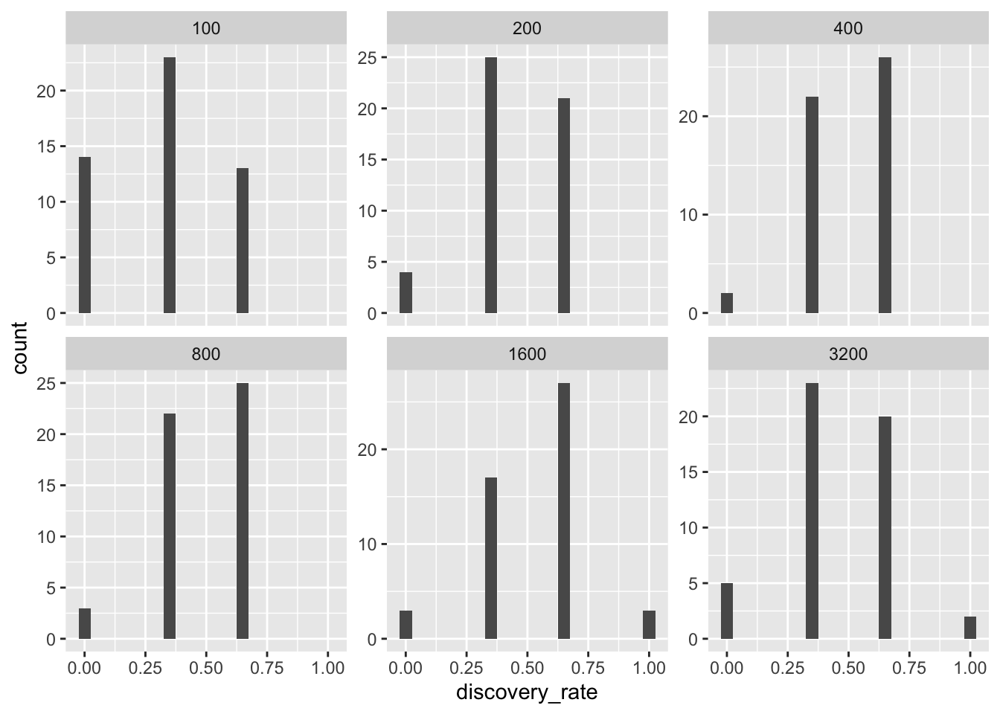
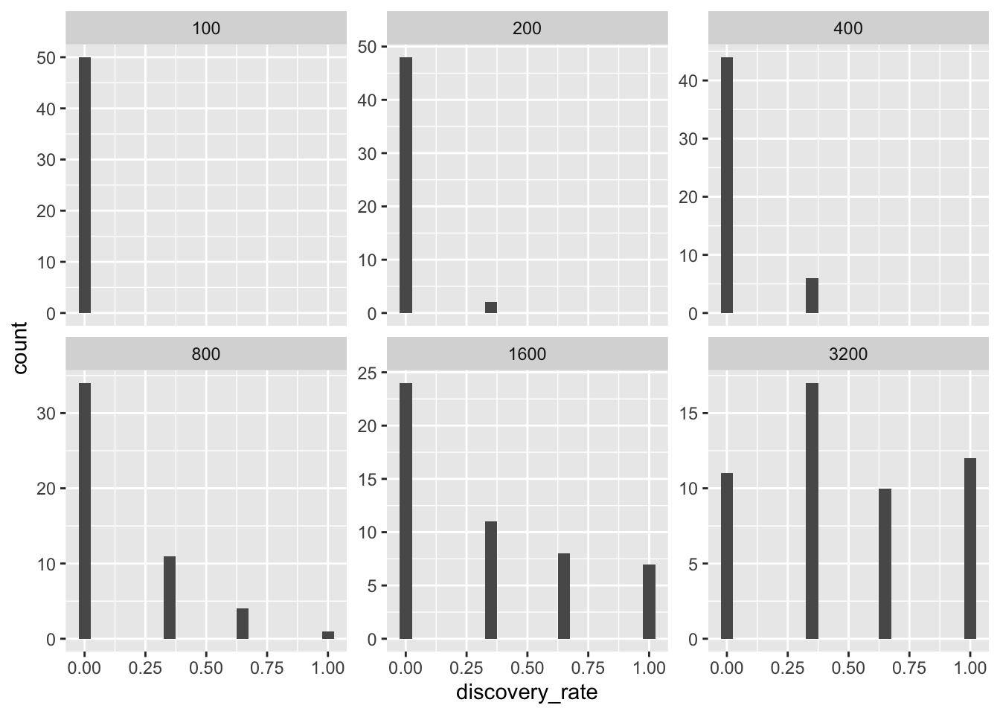
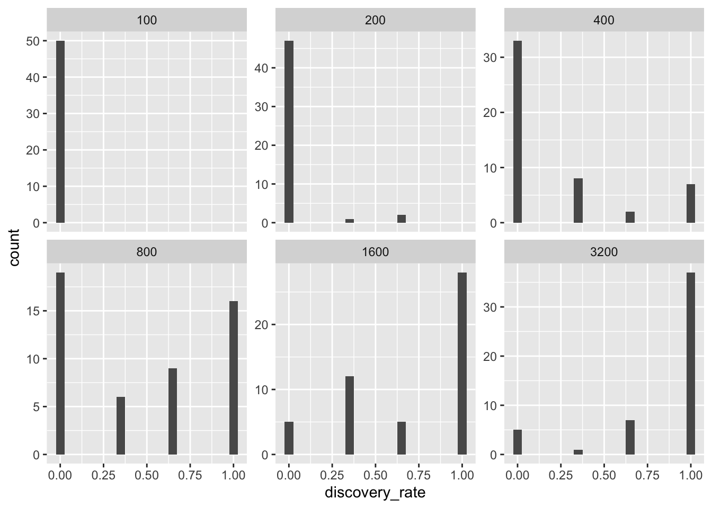
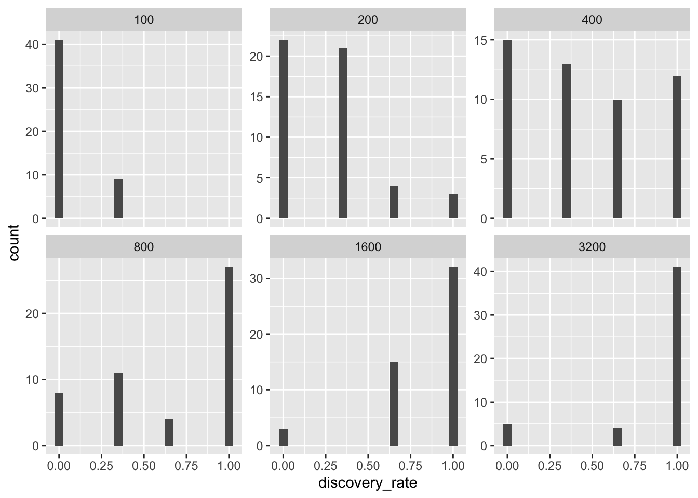
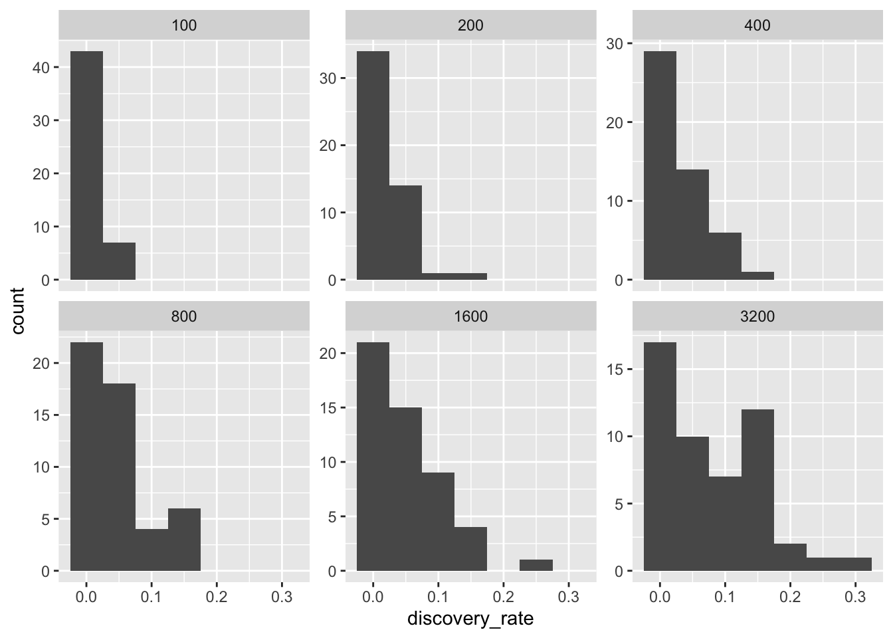
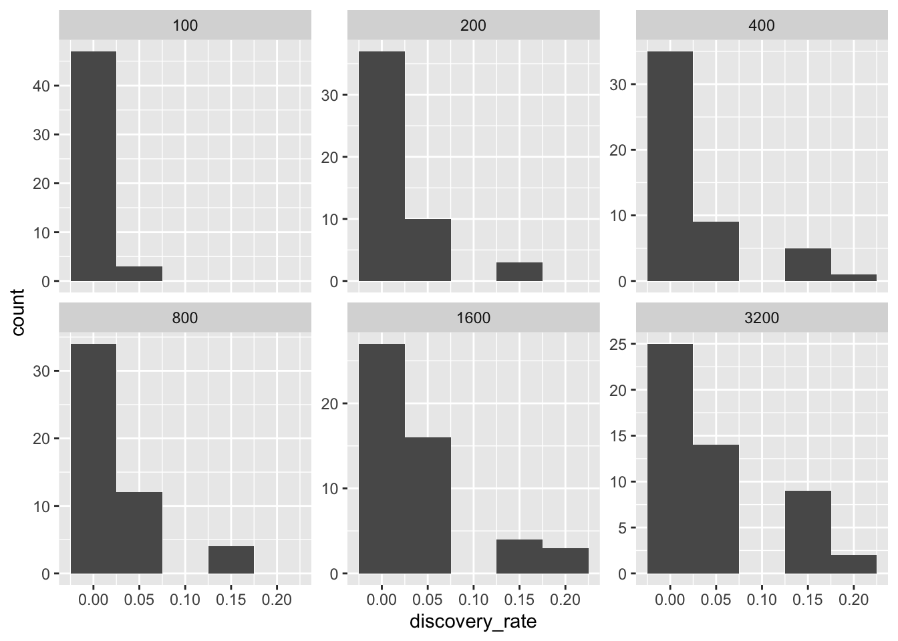

library(pacman)
p_load(remify, remstats, remstimate, shrinkem, tidyverse, patchwork,
kableExtra, foreach, doParallel, viridis, reshape2)
load("../Functions/functions.RData")Evaluation
1. Load Libraries and Functions
2. Load in Generated Data
# Load all files in "../GeneratedData/"
files <- list.files(path = "../GeneratedData/", full.names = TRUE)
# Loop through all files
for (file in files) {
load(file)
}3. Estimate the Models
Apply estimate_edgelists to the Data
# Set number of events
m <- c(100, 200, 400, 800, 1600, 3200)
# Set number of cores
ncores <- 7
t1 <- Sys.time()
estimates <- estimate_edgelists(edgelists, parameters, covar, num_cores = ncores, m = m)
t2 <- Sys.time()
(diff.time <- t2 - t1)
save(estimates, file = "../GeneratedData/estimates.RData")4. Evaluate the Models
4.1. Variable Selection
4.1.1 True Discovery Rates
Endogenous Effects
m <- c(100, 200, 400, 800, 1600, 3200)
methods <- c("mle_05", "shrink_hs", "shrink_ridge")
endog_true_discovery_rates <- data.frame(m = c(100, 200, 400, 800, 1600, 3200),
endog_mle05 = numeric(length(m)),
endog_hs = numeric(length(m)),
endog_ridge = numeric(length(m)))
for (i in seq_along(methods)) {
endog_true_discovery_rates[,i+1] <- discovery_rate(parameters, estimates, m = c(100, 200, 400, 800, 1600, 3200), edgelists, estimation = methods[i], coefficients = names(parameters[parameters != 0][2:4]))$discovery_rate
}Distribution of Discovery Rates
discovery_rate(parameters, estimates, m = c(100, 200, 400, 800, 1600, 3200), edgelists, estimation = methods[i], coefficients = names(parameters[parameters != 0][2:4]))$data %>%
group_by(m, Iteration) %>%
summarise(
discovery_rate = mean(selected, na.rm = TRUE)
) %>%
# plot histogram by m
ggplot(aes(x = discovery_rate)) +
geom_histogram(binwidth = 0.05) +
# facet wrap with same scales
facet_wrap(~m, scales = "free_y")`summarise()` has grouped output by 'm'. You can override using the `.groups`
argument.
Weak Exogenous Effects
weak_true_discovery_rates <- data.frame(m = c(100, 200, 400, 800, 1600, 3200),
weak_mle05 = numeric(length(m)),
weak_hs = numeric(length(m)),
weak_ridge = numeric(length(m)))
for (i in seq_along(methods)) {
weak_true_discovery_rates[,i+1] <- discovery_rate(parameters, estimates, m = c(100, 200, 400, 800, 1600, 3200), edgelists, estimation = methods[i], coefficients = names(parameters[parameters == log(1.22)]))$discovery_rate
}Distribution of Discovery Rates
discovery_rate(parameters, estimates, m = c(100, 200, 400, 800, 1600, 3200), edgelists, estimation = methods[i], coefficients = names(parameters[parameters == log(1.22)]))$data %>%
group_by(m, Iteration) %>%
summarise(
discovery_rate = mean(selected, na.rm = TRUE)
) %>%
# plot histogram by m
ggplot(aes(x = discovery_rate)) +
geom_histogram(binwidth = 0.05) +
# facet wrap with same scales
facet_wrap(~m, scales = "free_y")`summarise()` has grouped output by 'm'. You can override using the `.groups`
argument.
Medium Exogenous Effects
medium_true_discovery_rates <- data.frame(m = c(100, 200, 400, 800, 1600, 3200),
medium_mle05 = numeric(length(m)),
medium_hs = numeric(length(m)),
medium_ridge = numeric(length(m)))
for (i in seq_along(methods)) {
medium_true_discovery_rates[,i+1] <- discovery_rate(parameters, estimates, m = c(100, 200, 400, 800, 1600, 3200), edgelists, estimation = methods[i], coefficients = names(parameters[parameters == log(1.86)]))$discovery_rate
}Distribution of Discovery Rates
discovery_rate(parameters, estimates, m = c(100, 200, 400, 800, 1600, 3200), edgelists, estimation = methods[i], coefficients = names(parameters[parameters == log(1.86)]))$data %>%
group_by(m, Iteration) %>%
summarise(
discovery_rate = mean(selected, na.rm = TRUE)
) %>%
# plot histogram by m
ggplot(aes(x = discovery_rate)) +
geom_histogram(binwidth = 0.05) +
# facet wrap with same scales
facet_wrap(~m, scales = "free_y")`summarise()` has grouped output by 'm'. You can override using the `.groups`
argument.
Strong Exogenous Effects
strong_true_discovery_rates <- data.frame(m = c(100, 200, 400, 800, 1600, 3200),
strong_mle05 = numeric(length(m)),
strong_hs = numeric(length(m)),
strong_ridge = numeric(length(m)))
for (i in seq_along(methods)) {
strong_true_discovery_rates[,i+1] <- discovery_rate(parameters, estimates, m = c(100, 200, 400, 800, 1600, 3200), edgelists, estimation = methods[i], coefficients = names(parameters[parameters == log(3.00)]))$discovery_rate
}Distribution of Discovery Rates
discovery_rate(parameters, estimates, m = c(100, 200, 400, 800, 1600, 3200), edgelists, estimation = methods[i], coefficients = names(parameters[parameters == log(3.00)]))$data %>%
group_by(m, Iteration) %>%
summarise(
discovery_rate = mean(selected, na.rm = TRUE)
) %>%
# plot histogram by m
ggplot(aes(x = discovery_rate)) +
geom_histogram(binwidth = 0.05) +
# facet wrap with same scales
facet_wrap(~m, scales = "free_y")`summarise()` has grouped output by 'm'. You can override using the `.groups`
argument.
Plots
endog_plot_true <- plot_true_discovery_rates(endog_true_discovery_rates)
weak_plot_true <- plot_true_discovery_rates(weak_true_discovery_rates)
medium_plot_true <- plot_true_discovery_rates(medium_true_discovery_rates)
strong_plot_true <- plot_true_discovery_rates(strong_true_discovery_rates)
# Combine the plots and collect axis titles and legends
combined_plot_true <- (endog_plot_true + weak_plot_true + medium_plot_true + strong_plot_true) +
plot_layout(guides = "collect") & # Combine legends
theme(legend.position = "bottom",
plot.tag = element_text(size = 20, face = "bold")) # Position the legend at the bottom
combined_plot_true <- combined_plot_true +
plot_annotation(tag_levels = "A")Save the Plot
ggsave("../Plots/true_discovery_rates.png", combined_plot_true, width = 12, height = 8)4.1.2 False Discovery Rates
Endogenous Effects
endog_false_discovery_rates <- data.frame(
m = c(100, 200, 400, 800, 1600, 3200),
endog_mle05 = numeric(length(m)),
endog_hs = numeric(length(m)),
endog_ridge = numeric(length(m))
)
for (i in seq_along(methods)) {
endog_false_discovery_rates[,i+1] <- discovery_rate(parameters, estimates, m = c(100, 200, 400, 800, 1600, 3200), edgelists, estimation = methods[i], coefficients = names(parameters[parameters == 0])[1:23])$discovery_rate
}discovery_rate(parameters, estimates, m = c(100, 200, 400, 800, 1600, 3200), edgelists, estimation = methods[i], coefficients = names(parameters[parameters == 0])[1:23])$data %>%
group_by(m, Iteration) %>%
summarise(
discovery_rate = mean(selected, na.rm = TRUE)
) %>%
# plot histogram by m
ggplot(aes(x = discovery_rate)) +
geom_histogram(binwidth = 0.05) +
# facet wrap with same scales
facet_wrap(~m, scales = "free_y")`summarise()` has grouped output by 'm'. You can override using the `.groups`
argument.
Exogenous Effects
exog_false_discovery_rates <- data.frame(
m = c(100, 200, 400, 800, 1600, 3200),
exog_mle05 = numeric(length(m)),
exog_hs = numeric(length(m)),
exog_ridge = numeric(length(m))
)
for (i in seq_along(methods)) {
exog_false_discovery_rates[,i+1] <- discovery_rate(parameters, estimates, m = c(100, 200, 400, 800, 1600, 3200), edgelists, estimation = methods[i], coefficients = names(parameters[parameters == 0])[24:38])$discovery_rate
}discovery_rate(parameters, estimates, m = c(100, 200, 400, 800, 1600, 3200), edgelists, estimation = methods[i], coefficients = names(parameters[parameters == 0])[24:38])$data %>%
group_by(m, Iteration) %>%
summarise(
discovery_rate = mean(selected, na.rm = TRUE)
) %>%
# plot histogram by m
ggplot(aes(x = discovery_rate)) +
geom_histogram(binwidth = 0.05) +
# facet wrap with same scales
facet_wrap(~m, scales = "free_y")`summarise()` has grouped output by 'm'. You can override using the `.groups`
argument.
Plots
endog_plot_false <- plot_false_discovery_rates(endog_false_discovery_rates)
exog_plot_false <- plot_false_discovery_rates(exog_false_discovery_rates)
# Combine the plots and collect axis titles and legends
combined_plot_false <- (endog_plot_false + exog_plot_false) +
plot_layout(guides = "collect", axis_titles = "collect") & # Combine legends
theme(legend.position = "bottom",
plot.tag = element_text(size = 20, face = "bold"))
combined_plot_false <- combined_plot_false +
plot_annotation(tag_levels = "A")Save the Plot
ggsave("../Plots/false_discovery_rates.png", combined_plot_false, width = 12, height = 5)4.2 Bias and Variance
bias_mle <- bias_estimates(parameters = parameters,
estimates = estimates,
method = "mle_coefs") %>%
group_by(m, iteration) %>%
summarise(mean_iter = mean(bias, na.rm = TRUE)) %>%
group_by(m) %>%
summarise(mean = mean(mean_iter, na.rm = TRUE),
variance = var(mean_iter, na.rm = TRUE))`summarise()` has grouped output by 'm'. You can override using the `.groups`
argument.bias_hs <- bias_estimates(parameters = parameters,
estimates = estimates,
method = "shrink_coefs_hs") %>%
group_by(m, iteration) %>%
summarise(mean_iter = mean(bias, na.rm = TRUE)) %>%
group_by(m) %>%
summarise(mean = mean(mean_iter, na.rm = TRUE),
variance = var(mean_iter, na.rm = TRUE))`summarise()` has grouped output by 'm'. You can override using the `.groups`
argument.bias_ridge <- bias_estimates(parameters = parameters,
estimates = estimates,
method = "shrink_coefs_ridge") %>%
group_by(m, iteration) %>%
summarise(mean_iter = mean(bias, na.rm = TRUE)) %>%
group_by(m) %>%
summarise(mean = mean(mean_iter, na.rm = TRUE),
variance = var(mean_iter, na.rm = TRUE))`summarise()` has grouped output by 'm'. You can override using the `.groups`
argument.Summary over all \(M\)s
round(mean(bias_mle$mean),2)[1] 0.05round(mean(bias_hs$mean),2)[1] 0.01round(mean(bias_ridge$mean),2)[1] -0.024.3 Predictive Performance
4.3.1 In-Sample Predictions
pp_is_95 <- pp_is_all(edgelists = edgelists,
m = c(100, 200, 400, 800, 1600, 3200),
parameters = parameters,
covar = covar,
estimates = estimates,
quantile = 0.95)
pp_is_90 <- pp_is_all(edgelists = edgelists,
m = c(100, 200, 400, 800, 1600, 3200),
parameters = parameters,
covar = covar,
estimates = estimates,
quantile = 0.90)
pp_is_80 <- pp_is_all(edgelists = edgelists,
m = c(100, 200, 400, 800, 1600, 3200),
parameters = parameters,
covar = covar,
estimates = estimates,
quantile = 0.80)save(pp_is_95, pp_is_90, pp_is_80, file = "../GeneratedData/pp_is.RData")
# Combined and summarized in-sample predictive performance
pp_is_95 <- pp_is_95 %>% mutate(quantile = 0.95)
pp_is_90 <- pp_is_90 %>% mutate(quantile = 0.90)
pp_is_80 <- pp_is_80 %>% mutate(quantile = 0.80)
pp_is <- rbind(pp_is_95, pp_is_90, pp_is_80) %>%
group_by(m, quantile) %>%
summarise(
mle = mean(mle, na.rm = TRUE),
hs = mean(hs, na.rm = TRUE),
ridge = mean(ridge, na.rm = TRUE)
)
save(pp_is, file = "../GeneratedData/pp_is_combined.RData")4.3.2 Out-of-Sample Predictive Performance
pp_oos_95 <- pp_oos_all(edgelists = edgelists,
m = c(100, 200, 400, 800, 1600),
parameters = parameters,
covar = covar,
estimates = estimates,
quantile = 0.95)pp_oos_90 <- pp_oos_all(edgelists = edgelists,
m = c(100, 200, 400, 800, 1600),
parameters = parameters,
covar = covar,
estimates = estimates,
quantile = 0.90)
t3 <- Sys.time()pp_oos_80 <- pp_oos_all(edgelists = edgelists,
m = c(100, 200, 400, 800, 1600),
parameters = parameters,
covar = covar,
estimates = estimates,
quantile = 0.80)# Full out-of-sample predictive performance
save(pp_oos_95, pp_oos_90, pp_oos_80, file = "../GeneratedData/pp_oos.RData")
# Combined and summarized out-of-sample predictive performance
pp_oos_95 <- pp_oos_95 %>% mutate(quantile = 0.95)
pp_oos_90 <- pp_oos_90 %>% mutate(quantile = 0.90)
pp_oos_80 <- pp_oos_80 %>% mutate(quantile = 0.80)
pp_oos <- rbind(pp_oos_95, pp_oos_90, pp_oos_80) %>%
group_by(m, quantile) %>%
summarise(
mle = mean(mle, na.rm = TRUE),
hs = mean(hs, na.rm = TRUE),
ridge = mean(ridge, na.rm = TRUE)
)
save(pp_oos, file = "../GeneratedData/pp_oos_combined.RData")4.3.3 Plots
plot_pp_is <- plot_pp(pp_is)
plot_pp_oos <- plot_pp(pp_oos)
combined_plot_pp <- (plot_pp_is / plot_pp_oos) +
plot_layout(guides = "collect") &
theme(legend.position = "bottom",
plot.tag = element_text(size = 20, face = "bold"))
combined_plot_pp <- combined_plot_pp +
plot_annotation(tag_levels = "A")ggsave("../Plots/predictive_performance.png", combined_plot_pp, width = 12, height = 10)